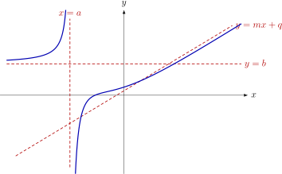
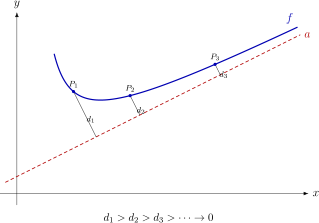
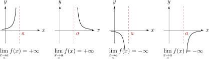
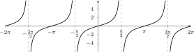
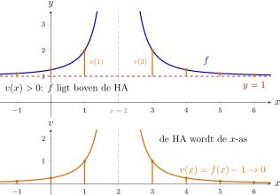
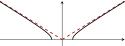
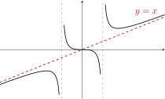

Hoofdstuk 15Asymptoten

Leerplandoelstellingen (GO! Navigator)
Gevorderde wiskunde (WD3_06.08)
-
• WD3_06.08.21 (MD 06.08.07) De leerlingen leggen het verband tussen de grafiek en het voorschrift van een functie en haar kenmerken.
-
– afbakening: veeltermfuncties, rationale functies, (elementaire) irrationale functies, exponentiële functies, logaritmische functies \(f(x)=\log _a(x)\), goniometrische functies \(f(x)=\cos x\) en \(f(x)=\tan x\), cyclometrische functies, absolute waardenfunctie, meervoudig functievoorschrift
-
– afbakening: domein, bereik, nulwaarden, tekenverloop, stijgen/dalen/constant, extrema, constante/toenemende/afnemende stijging/daling, symmetrie, periode, amplitude, asymptotisch gedrag, gedrag op oneindig
-
-
• WD3_06.08.26 (MD 06.08.16) De leerlingen bepalen grafisch en algebraı̈sch limieten van functies en analyseren het asymptotisch gedrag.
-
– afbakening: continuı̈teit
-
– afbakening: horizontaal, verticaal en schuin asymptotisch gedrag
-
Didactische uitwerking: verticale, horizontale en schuine asymptoten; ligging van de grafiek ten opzichte van een asymptoot; rationale en irrationale functies.
I Wat is een asymptoot?
1 Definitie
Een rechte \(a\) is een asymptoot van de grafiek van \(y=f(x)\) als de grafiek steeds dichter tegen de rechte aankruipt wanneer we de grafiek onbegrensd ver volgen.
Formeel: de afstand tussen een punt \(P\) van de grafiek en de rechte \(a\) nadert naar \(0\) wanneer \(P\) zich onbegrensd ver van de oorsprong verwijdert langs de grafiek:
\[ \lim _{P\to \infty } d(P,a)=0 . \]
De grafiek hoeft de asymptoot daarbij niet te bereiken.

2 Drie soorten
Naargelang de richting van de rechte \(a\) onderscheiden we:
-
• een verticale asymptoot \(x=a\); Hierbij vertrekt \(P\) naar \(\pm \infty \) in de \(y\)-richting terwijl \(x\) naar \(a\) nadert.
-
• een horizontale asymptoot \(y=b\); Hierbij vertrekt \(P\) naar \(\pm \infty \) in de \(x\)-richting en nadert \(f(x)\) naar \(b\).
-
• een schuine asymptoot \(y=mx+q\) met \(m\ne 0\). Hierbij vertrekt \(P\) naar \(\pm \infty \) in de \(x\)-richting en nadert het verschil met de rechte naar \(0\).
Alle drie de soorten staan samen op de figuur bij de titel van dit hoofdstuk.
II Verticale asymptoten
1 Definitie
De rechte \(x=c\) is een verticale asymptoot (VA) van \(y=f(x)\) als
\[ \lim _{x\underset {>}{\to }c}f(x)\in \{-\infty ,+\infty \} \quad \text {of}\quad \lim _{x\underset {<}{\to }c}f(x)\in \{-\infty ,+\infty \}. \]

2 Opsporen van verticale asymptoten
Voorbeeld 1
\[ f(x)=\frac {x^2-4x+5}{(x-2)^2}, \qquad \aside {\dom f=\R \setminus \{2\}}. \]
\(x=2\) is nulwaarde van de noemer, niet van de teller:
\[ \lim _{x\to 2}f(x)=\frac {1}{0}=\underbrace {+\infty \text { of }-\infty }_{\text {juiste liggen m.b.v. t.v.}} \quad \Longrightarrow \quad \boxed {x=2\text { is VA}.} \]
\[ \begin {array}{c|ccc} x& &2&\\ \hline T=x^2-4x+5&+&+&+\\ N=(x-2)^2&+&0&+\\ \hline f(x)&+&|&+ \end {array} \qquad \raisebox {-0.35cm}{\smash {\begin {tikzpicture}[baseline=(current bounding box.center)] \begin {axis}[ width=5.2cm, height=3.6cm, axis lines=middle, xmin=-1, xmax=5, ymin=-1, ymax=20, ticks=none, clip=true, ] \addplot [gray,dashed] coordinates {(2,-1) (2,20)}; \addplot [gray,dashed] coordinates {(-1,1) (5,1)}; \addplot [thick,domain=-1:1.78,samples=100] {1+1/(x-2)^2}; \addplot [thick,domain=2.22:5,samples=100] {1+1/(x-2)^2}; \node [anchor=south west] at (axis cs:3.8,1.1) {$f$}; \end {axis} \end {tikzpicture}}} \]
Dus \(f(x)\to +\infty \) langs beide zijden van \(x=2\).
Voorbeeld 2
Voor \(f(x)=\tan x\) geldt
| met GRM: | MODE | RADIAN | ||
| WINDOW | \(-2\pi \leq x\leq 2\pi \), \(\texttt {Xscl}=\pi /2\) | |||
| \(-10\leq y\leq 10\), \(\texttt {Yscl}=2\) |
\[ \lim _{x\underset {<}{\to }\frac \pi 2}\tan x=+\infty , \qquad \lim _{x\underset {>}{\to }\frac \pi 2}\tan x=-\infty . \]
Door de periode \(\pi \):
\[ \boxed {x=\frac \pi 2+k\pi \text { is VA},\quad k\in \Z .} \]

Besluit
-
• Een functie kan oneindig veel verticale asymptoten hebben.
-
• Bij een rationale functie zijn de kandidaten de nulwaarden van de noemer.
-
• Gemeenschappelijke factor van T en N is mogelijks een perforatie i.p.v. VA.
-
• Onderzoek de ligging met een tekenverloop van \(f\) rond de kandidaat.
III Horizontale asymptoten
1 Definitie
De rechte \(y=b\) is een horizontale asymptoot (HA) van \(y=f(x)\) als
\[ \lim _{x\to +\infty }f(x)=b\in \R \qquad \text {of}\qquad \lim _{x\to -\infty }f(x)=b\in \R . \]
2 Opsporen van horizontale asymptoten
Voorbeeld 1
\[ f(x)=\frac {x^2-4x+5}{(x-2)^2}. \]
\[ \lim _{x\to \pm \infty }f(x) =\lim _{x\to \pm \infty }\frac {x^2}{x^2}=1\in \R \quad \Longrightarrow \quad \boxed {y=1\text { is HA}.} \]
Ligging ten opzichte van de HA: onderzoek het verschil
\[ v(x)=f(x)-b, \]
dat is de verticale afstand van de grafiek tot de HA, mét een teken. Hier is \(b=1\), dus
\[ v(x)=f(x)-1 =\frac {x^2-4x+5}{(x-2)^2}-\frac {(x-2)^2}{(x-2)^2} =\frac {x^2-4x+5-x^2+4x-4}{(x-2)^2} =\frac 1{(x-2)^2}. \]
\[ \begin {array}{c|ccc} x& &2&\\ \hline T=1&+&+&+\\ N=(x-2)^2&+&0&+\\ \hline v(x)&+&|&+ \end {array} \qquad \begin {array}{r@{\;}c@{\;}l} v(x)>0&\Longrightarrow &\text {grafiek boven de HA}\\ v(x)<0&\Longrightarrow &\text {grafiek onder de HA}\\ v(x)=0&\Longrightarrow &\text {grafiek snijdt de HA} \end {array} \]
Hier is \(v(x)>0\) voor elke \(x\ne 2\):
\[ \boxed {\text {de grafiek ligt overal boven de HA }y=1.} \]
Bovendien is
\[ \lim _{x\to \pm \infty }v(x)=\lim _{x\to \pm \infty }\frac 1{(x-2)^2}=0, \]
en dat moet ook: de verticale afstand tot de HA krimpt naar \(0\).

Voorbeeld 2
\[ f(x)=\sqrt {x^2+6x}-x. \]
Voor \(x\to +\infty \):
\(\seteqnumber{0}{}{0}\)\begin{align*} \lim _{x\to +\infty }f(x) &=\lim _{x\to +\infty } \frac {x^2+6x-x^2}{\sqrt {x^2+6x}+x}\\ &=\lim _{x\to +\infty }\frac {6}{\sqrt {1+6/x}+1}=3\in \R . \end{align*} Dus \(\boxed {y=3\text { is HA voor }x\to +\infty }\).
Voor \(x\to -\infty \) is \(f(x)\to +\infty \notin \R \): geen HA.
Ligging ten opzichte van de HA voor \(x \to +\infty \):
\[ v(x)=f(x)-3=\sqrt {x^2+6x}-x-3\underset {\text {onder HA}}{<}0 \quad (x\to +\infty ) \qquad \raisebox {-0.55cm}{\smash {\begin {tikzpicture}[baseline=(current bounding box.center)] \begin {axis}[ width=4.5cm,height=3.1cm, axis lines=middle,xmin=-12,xmax=12,ymin=-1,ymax=16, ticks=none,clip=true, ] \addplot [gray,dashed] coordinates {(-12,3) (12,3)}; \addplot [thick,domain=-12:-6,samples=80] {sqrt(x^2+6*x)-x}; \addplot [thick,domain=0:12,samples=80] {sqrt(x^2+6*x)-x}; \node [anchor=north west] at (axis cs:8,2.9) {$f$}; \end {axis} \end {tikzpicture}}} \]
Voor \(x \to +\infty \) is \(x+3>0\), dus:
\[ \sqrt {x^2+6x} < \sqrt {x^2+6x+9} = \sqrt {(x+3)^2} = x+3. \]
Daarom:
\[ \sqrt {x^2+6x}-x-3<0. \]
Besluit
-
• Een functie heeft ten hoogste twee verschillende horizontale asymptoten.
-
• Onderzoek beide limieten \(x\to +\infty \) en \(x\to -\infty \).
-
• Voor de ligging bij \(y=b\): \(v(x)=f(x)-b\). Dan \(v<0\): onder de HA; \(v>0\): boven de HA.
IV Schuine asymptoten
1 Definitie
De rechte \(y=mx+q\), met \(m\ne 0\), is een schuine asymptoot (SA) van \(y=f(x)\) als
\[ \lim _{x\to +\infty }\bigl (f(x)-mx-q\bigr )=0 \quad \text {of}\quad \lim _{x\to -\infty }\bigl (f(x)-mx-q\bigr )=0. \]
Voor \(m=0\) krijgen we een horizontale asymptoot.
2 Formules van Cauchy
Als \(y=mx+q\) een SA is, dan
\[ \boxed {m=\lim _{x\to \pm \infty }\frac {f(x)}x}, \qquad \boxed {q=\lim _{x\to \pm \infty }\bigl (f(x)-mx\bigr )}. \]
Beide limieten moeten reëel zijn.
3 Berekening van \(m\) en \(q\)
\(m\): \(y=mx+q\) is SA van \(y=f(x)\)
\(\seteqnumber{0}{}{0}\)\begin{align*} &\Longleftrightarrow \lim _{x\to \pm \infty }\bigl (f(x)-mx-q\bigr )=0 \\ &\Longrightarrow \lim _{x\to \pm \infty }\bigl (f(x)-mx-q\bigr )\cdot \lim _{x\to \pm \infty }\frac 1x=0 \qquad \left (0\cdot \frac 1\infty =0\cdot 0=0\right ) \\ &\Longleftrightarrow \lim _{x\to \pm \infty }\frac {f(x)-mx-q}{x}=0 \\ &\Longleftrightarrow \lim _{x\to \pm \infty }\left (\frac {f(x)}x-m-\frac qx\right )=0 \\ &\Longleftrightarrow \lim _{x\to \pm \infty }\frac {f(x)}x -\lim _{x\to \pm \infty }m -\lim _{x\to \pm \infty }\frac qx=0 \\ &\Longleftrightarrow \lim _{x\to \pm \infty }\frac {f(x)}x-m-0=0 \\ &\Longleftrightarrow \boxed {m=\lim _{x\to \pm \infty }\frac {f(x)}x}. \end{align*}
\(q\): \(y=mx+q\) is SA van \(y=f(x)\)
\(\seteqnumber{0}{}{0}\)\begin{align*} &\Longleftrightarrow \lim _{x\to \pm \infty }\bigl (f(x)-mx-q\bigr )=0 \\ &\Longleftrightarrow \lim _{x\to \pm \infty }\bigl (f(x)-mx\bigr ) -\lim _{x\to \pm \infty }q=0 \\ &\Longleftrightarrow \lim _{x\to \pm \infty }\bigl (f(x)-mx\bigr )-q=0 \\ &\Longleftrightarrow \boxed {q=\lim _{x\to \pm \infty }\bigl (f(x)-mx\bigr )}. \end{align*}
4 Opsporen van schuine asymptoten
Voorbeeld 1: rationale functie
\[ f(x)=\frac {x^2+x-7}{x-2}. \]
Via Euclidische deling (H3):
\[ x^2+x-7=(x-2)(x+3)-1 \quad \Longrightarrow \quad f(x)=x+3-\frac 1{x-2}. \]
Omdat \(\operatorname {gr}T=\operatorname {gr}N+1\), is het quotiënt de SA: \(y=x+3\).
Met de algemene methode:
\(\seteqnumber{0}{}{0}\)\begin{align*} m &=\lim _{x\to \pm \infty }\frac {f(x)}x =\lim _{x\to \pm \infty }\frac {x^2+x-7}{x^2-2x} =\text {``}\frac {\infty }{\infty }\text {''} \\ &=\lim _{x\to \pm \infty }\frac {x^2}{x^2}=1\in \R \quad \Longrightarrow \quad \text {OK!} \end{align*}
\(\seteqnumber{0}{}{0}\)\begin{align*} q &=\lim _{x\to \pm \infty }\bigl (f(x)-mx\bigr ) \\ &=\lim _{x\to \pm \infty } \left (\frac {x^2+x-7}{x-2}-x\right ) \\ &=\lim _{x\to \pm \infty } \frac {x^2+x-7-x^2+2x}{x-2} \\ &=\lim _{x\to \pm \infty }\frac {3x-7}{x-2} =\text {``}\frac {\infty }{\infty }\text {''} \\ &=\lim _{x\to \pm \infty }\frac {3x}{x}=3\in \R \quad \Longrightarrow \quad \text {OK!} \end{align*} Dus \(\boxed {y=x+3\text { is SA voor }x\to \pm \infty }\).
Ligging t.o.v. de SA:
\[ v(x)=f(x)-mx-q =\frac {x^2+x-7}{x-2}-x-3 =-\frac 1{x-2}. \]
\[ \begin {array}{c|ccc} x&&2&\\ \hline -1&-&-&-\\ x-2&-&0&+\\ \hline v(x)&\underset {\text {boven SA}}{+}&|&\underset {\text {onder SA}}{-} \end {array} \qquad \raisebox {-0.5cm}{\smash {\begin {tikzpicture}[baseline=(current bounding box.center)] \begin {axis}[ width=5cm,height=3.5cm, axis lines=middle,xmin=-5,xmax=7,ymin=-4,ymax=10, ticks=none,clip=true, ] \addplot [gray,dashed] coordinates {(2,-4) (2,10)}; \addplot [red!70!black,thick,dashed,domain=-5:7] {x+3}; \addplot [thick,domain=-5:1.8,samples=80] {(x^2+x-7)/(x-2)}; \addplot [thick,domain=2.2:7,samples=80] {(x^2+x-7)/(x-2)}; \node [red!70!black,anchor=south east] at (axis cs:6.7,9.7) {$y=x+3$}; \end {axis} \end {tikzpicture}}} \]
Voorbeeld 2: irrationale functie
\[ f(x)=\sqrt {x^2-1}. \]
Irrationale functie: onderscheid \(x\to +\infty \) en \(x\to -\infty \).
Voor \(x\to +\infty \) geldt \(\sqrt {x^2}=x\):
\(\seteqnumber{0}{}{0}\)\begin{align*} m_1 &=\lim _{x\to +\infty }\frac {f(x)}x =\lim _{x\to +\infty }\frac {\sqrt {x^2-1}}x =\text {``}\frac \infty \infty \text {''} \\ &=\lim _{x\to +\infty } \frac {x\sqrt {1-1/x^2}}x=1\in \R \quad \Longrightarrow \quad \text {OK!} \end{align*}
\(\seteqnumber{0}{}{0}\)\begin{align*} q_1 &=\lim _{x\to +\infty }\bigl (f(x)-m_1x\bigr ) =\lim _{x\to +\infty }\bigl (\sqrt {x^2-1}-x\bigr ) =\text {``}\infty -\infty \text {''} \\ &=\lim _{x\to +\infty } \frac {(\sqrt {x^2-1}-x)(\sqrt {x^2-1}+x)} {\sqrt {x^2-1}+x} \\ &=\lim _{x\to +\infty }\frac {x^2-1-x^2}{\sqrt {x^2-1}+x} =\lim _{x\to +\infty }\frac {-1}{\sqrt {x^2-1}+x}=0\in \R \quad \Longrightarrow \quad \text {OK!} \end{align*} Dus \(\boxed {y=x\text { is SA voor }x\to +\infty }\).
Voor \(x\to -\infty \) geldt \(\sqrt {x^2}=|x|=-x\):
\(\seteqnumber{0}{}{0}\)\begin{align*} m_2 &=\lim _{x\to -\infty }\frac {f(x)}x =\lim _{x\to -\infty }\frac {\sqrt {x^2-1}}x =\text {``}\frac \infty {-\infty }\text {''} \\ &=\lim _{x\to -\infty } \frac {-x\sqrt {1-1/x^2}}x=-1\in \R \quad \Longrightarrow \quad \text {OK!} \end{align*}
\(\seteqnumber{0}{}{0}\)\begin{align*} q_2 &=\lim _{x\to -\infty }\bigl (f(x)-m_2x\bigr ) =\lim _{x\to -\infty }\bigl (\sqrt {x^2-1}+x\bigr ) =\text {``}\infty -\infty \text {''} \\ &=\lim _{x\to -\infty } \frac {(\sqrt {x^2-1}+x)(\sqrt {x^2-1}-x)} {\sqrt {x^2-1}-x} \\ &=\lim _{x\to -\infty }\frac {x^2-1-x^2}{\sqrt {x^2-1}-x} =\lim _{x\to -\infty }\frac {-1}{\sqrt {x^2-1}-x}=0\in \R \quad \Longrightarrow \quad \text {OK!} \end{align*} Dus \(\boxed {y=-x\text { is SA voor }x\to -\infty }\).
Ligging t.o.v. de SA:
\[ v_1(x)=\sqrt {x^2-1}-x\underset {\text {onder SA}_1}{<}0 \quad (x\to +\infty ), \qquad v_2(x)=\sqrt {x^2-1}+x\underset {\text {onder SA}_2}{<}0 \quad (x\to -\infty ). \]

Besluit
-
• Een functie heeft ten hoogste twee verschillende asymptoten die horizontaal of schuin zijn.
-
• Bereken \(m\) en \(q\) afzonderlijk voor \(x\to +\infty \) en \(x\to -\infty \).
-
• Voor de ligging: \(v(x)=f(x)-mx-q\). Dan \(v<0\): onder de SA; \(v>0\): boven de SA.
Tip
Start elke oefening met het bepalen van \(\dom f\). Dit geeft onmiddellijk de nulwaarden van de noemer (voor het opsporen van VA’s), maar kan ook veel werk besparen voor HA/SA als \(f\) niet bestaat voor \(x\to \pm \infty \).
V Uitgewerkt voorbeeld
\[ f(x)=\frac {x^3}{x^2-1}. \]
Rationale functie:
\[ \dom f=\R \setminus \{-1,1\}. \]
VA: Nulwaarden noemer: \(x=-1\) en \(x=1\); twee limieten onderzoeken.
\[ \begin {array}{c|ccccccc} x&&-1&&0&&1&\\ \hline T=x^3&-&-&-&0&+&+&+\\ N=x^2-1&+&0&-&-&-&0&+\\ \hline f(x)&-&|&+&0&-&|&+ \end {array} \]
\[ \lim _{x\underset {<}{\to }-1}f(x)=-\infty , \quad \lim _{x\underset {>}{\to }-1}f(x)=+\infty \quad \Longrightarrow \quad \boxed {x=-1\text { is VA}_1}, \]
\[ \lim _{x\underset {<}{\to }1}f(x)=-\infty , \quad \lim _{x\underset {>}{\to }1}f(x)=+\infty \quad \Longrightarrow \quad \boxed {x=1\text { is VA}_2}. \]
HA:
\[ \lim _{x\to \pm \infty }f(x) =\text {``}\frac {\infty ^3}{\infty ^2}\text {''} =\lim _{x\to \pm \infty }x=\pm \infty \notin \R \quad \Longrightarrow \quad \text {geen HA}. \]
SA:
\[ m=\lim _{x\to \pm \infty }\frac {x^3}{x(x^2-1)} =\lim _{x\to \pm \infty }\frac {x^3}{x^3}=1\in \R \quad \Longrightarrow \quad \text {OK!} \]
\(\seteqnumber{0}{}{0}\)\begin{align*} q &=\lim _{x\to \pm \infty }\left (\frac {x^3}{x^2-1}-x\right ) \\ &=\lim _{x\to \pm \infty }\frac {x^3-x^3+x}{x^2-1} \\ &=\lim _{x\to \pm \infty }\frac {x}{x^2-1}=0\in \R \quad \Longrightarrow \quad \text {OK!} \end{align*} Dus \(\boxed {y=x\text { is SA voor }x\to \pm \infty }\).
Ligging t.o.v. de SA:
\[ v(x)=f(x)-x=\frac {x}{x^2-1}. \]
\[ \begin {array}{c|ccccccc} x&&-1&&0&&1&\\ \hline x&-&-&-&0&+&+&+\\ x^2-1&+&0&-&-&-&0&+\\ \hline v(x)&\underset {\text {onder SA}}{-}&|&+&0&-&|& \underset {\text {boven SA}}{+} \end {array} \]

VI Oefeningen
Oefening 1
Bepaal de asymptoten van de grafiek van de functies met onderstaande voorschriften, schets (met behulp van ICT) de grafiek van de functie en onderzoek de ligging van de grafiek t.o.v. de asymptoten.
-
(a) \(f(x)=\dfrac {1}{x^2-4}\)
\(\dom f=\R \setminus \{-2,2\}\). Uit het tekenverloop
\[ \begin {array}{c|ccccc} x&&-2&&2&\\ \hline T=1&+&+&+&+&+\\ N=x^2-4&+&0&-&0&+\\ \hline \dfrac TN&+&|&-&|&+ \end {array} \]
volgt \(\lim _{x\underset {<}{\to }-2}f(x)=+\infty \) en \(\lim _{x\underset {>}{\to }2}f(x)=+\infty \), dus \(x=-2\) en \(x=2\) zijn VA. Verder \(\lim _{x\to \pm \infty }f(x)=0\in \R \), dus \(y=0\) is HA (geen SA). Voor \(|x|>2\) is \(f(x)>0\): de grafiek ligt aan beide uiteinden boven de HA.
-
(b) \(f(x)=\dfrac {x^3-8}{2x^2}\)
\(\dom f=\R \setminus \{0\}\). Omdat
\[ \begin {array}{c|ccc} x&&0&\\ \hline T=x^3-8&-&-&-\\ N=2x^2&+&0&+\\ \hline \dfrac TN&-&|&- \end {array} \]
geldt \(\lim _{x\to 0}f(x)=-\infty \), dus \(x=0\) is VA. Bovendien \(\lim _{x\to \pm \infty }f(x)=\pm \infty \notin \R \): geen HA.
\[ m=\lim _{x\to \pm \infty }\frac {f(x)}x=\frac 12, \qquad q=\lim _{x\to \pm \infty }\left (f(x)-\frac 12x\right )=0. \]
Dus \(y=\frac 12x\) is SA. Omdat \(v(x)=-4/x^2<0\), ligt de grafiek onder de SA.
-
(c) \(f(x)=\dfrac {2x}{x^2+2}\)
\(\dom f=\R \): geen VA. \(\lim _{x\to \pm \infty }f(x)=0\in \R \), dus \(y=0\) is HA (geen SA). Omdat \(f(x)>0\) voor \(x>0\) en \(f(x)<0\) voor \(x<0\), ligt de grafiek boven de HA voor \(x\to +\infty \) en eronder voor \(x\to -\infty \).
-
(d) \(f(x)=\dfrac {2-x-x^2}{x+1}\)
\(\dom f=\R \setminus \{-1\}\). De teller wordt \(2\) in \(x=-1\), dus \(x=-1\) is VA. \(\lim _{x\to \pm \infty }f(x)=\mp \infty \notin \R \): geen HA. Uit de deling
\[ f(x)=-x+\frac {2}{x+1} \]
volgt \(m=-1\) en \(q=0\): \(y=-x\) is SA. Met \(v(x)=2/(x+1)\) ligt de grafiek boven de SA voor \(x>-1\) en eronder voor \(x<-1\).
-
(e) \(f(x)=\dfrac {x^2+x-2}{x^2+2x-3}\)
\[ f(x)=\frac {(x+2)(x-1)}{(x+3)(x-1)}=\frac {x+2}{x+3}\quad (x\ne 1). \]
\(x=1\) is een perforatie, \(x=-3\) is VA. \(\lim _{x\to \pm \infty }f(x)=1\in \R \), dus \(y=1\) is HA (geen SA). Met \(v(x)=f(x)-1=-\frac {1}{x+3}\) ligt de grafiek onder de HA voor \(x\to +\infty \) en erboven voor \(x\to -\infty \).
-
(f) \(f(x)=\dfrac {x^3+4x-5}{x^2-1}\)
\[ x^3+4x-5=(x-1)(x^2+x+5),\qquad x^2-1=(x-1)(x+1). \]
\(x=1\) is een perforatie; \(x=-1\) is VA. \(\lim _{x\to \pm \infty }f(x)=\pm \infty \notin \R \): geen HA.
\[ f(x)=x+\frac {5x-5}{x^2-1}=x+\frac 5{x+1}\quad (x\ne 1). \]
Dus \(y=x\) is SA en \(v(x)=5/(x+1)\): onder de SA voor \(x<-1\), boven de SA voor \(x>-1\).
-
(g) \(f(x)=\sqrt {x^2+4}\)
\(\dom f=\R \): geen VA. \(\lim _{x\to \pm \infty }f(x)=+\infty \notin \R \): geen HA. Voor \(x\to +\infty \): \(m=1\) en \(q=\lim (\sqrt {x^2+4}-x)=0\), dus \(y=x\) is SA. Voor \(x\to -\infty \): \(m=-1\) en \(q=\lim (\sqrt {x^2+4}+x)=0\), dus \(y=-x\) is SA. Omdat \(\sqrt {x^2+4}>|x|\), ligt de grafiek aan beide uiteinden boven de SA.
-
(h) \(f(x)=\sqrt {4-x^2}\)
\(\dom f=[-2,2]\). Dat domein is begrensd en \(f\) is er overal begrensd (\(0\le f(x)\le 2\)), dus de grafiek heeft geen asymptoten.
-
(i) \(f(x)=\sqrt {x^2-4}\)
\(\dom f=]-\infty ,-2]\cup [2,+\infty [\); in \(x=\pm 2\) is \(f\) eindig, dus geen VA. \(\lim _{x\to \pm \infty }f(x)=+\infty \notin \R \): geen HA. Voor \(x\to +\infty \): \(m=1\), \(q=\lim (\sqrt {x^2-4}-x)=0\), dus \(y=x\) is SA; voor \(x\to -\infty \): \(m=-1\), \(q=0\), dus \(y=-x\) is SA. Omdat \(\sqrt {x^2-4}<|x|\), ligt de grafiek aan beide uiteinden onder de SA.
-
(j) \(f(x)=\sqrt {x^2-4x}\)
\(\dom f=]-\infty ,0]\cup [4,+\infty [\); geen VA. \(\lim _{x\to \pm \infty }f(x)=+\infty \notin \R \): geen HA. Voor \(x\to +\infty \):
\[ m_1=1,\qquad q_1=\lim (\sqrt {x^2-4x}-x)=-2, \]
dus \(y=x-2\) is SA. Voor \(x\to -\infty \):
\[ m_2=-1,\qquad q_2=\lim (\sqrt {x^2-4x}+x)=2, \]
dus \(y=-x+2\) is SA. De grafiek ligt bij beide uiteinden onder de SA.
-
(k) \(f(x)=2\sqrt {x^2-4x+3}\)
\(\dom f=]-\infty ,1]\cup [3,+\infty [\); geen VA, geen HA. Voor \(x\to +\infty \): \(m=2\) en \(q=2\lim (\sqrt {x^2-4x+3}-x)=-4\), dus \(y=2x-4\) is SA. Voor \(x\to -\infty \): \(m=-2\) en \(q=2\lim (\sqrt {x^2-4x+3}+x)=4\), dus \(y=-2x+4\) is SA. Omdat \(x^2-4x+3<(x-2)^2\), is \(\sqrt {x^2-4x+3}<|x-2|\): de grafiek ligt aan beide uiteinden onder de SA.
-
(l) \(f(x)=\sqrt {x^2-4x+3}-1\)
Zelfde domein \(]-\infty ,1]\cup [3,+\infty [\) en zelfde grafiek als in (k), maar één eenheid lager en zonder de factor \(2\): geen VA, geen HA, \(y=x-3\) is SA voor \(x\to +\infty \) en \(y=-x+1\) is SA voor \(x\to -\infty \). De grafiek ligt aan beide uiteinden onder de SA.
-
(m) \(f(x)=\sqrt {x^2-4x+3}+x\)
\(\dom f=]-\infty ,1]\cup [3,+\infty [\); geen VA.
\[ \lim _{x\to -\infty }f(x)=2\in \R , \]
dus \(y=2\) is HA voor \(x\to -\infty \); de grafiek ligt eronder. Voor \(x\to +\infty \):
\[ m=2,\qquad q=\lim _{x\to +\infty }(\sqrt {x^2-4x+3}-x)=-2. \]
Dus \(y=2x-2\) is SA voor \(x\to +\infty \); de grafiek ligt eronder.
-
(n) \(f(x)=\dfrac {\sqrt {x^2-4x}}{x+4}\)
\(\dom f=]-\infty ,-4[\,\cup \,]-4,0]\cup [4,+\infty [\). In \(x=-4\) wordt de teller \(\sqrt {32}\ne 0\) en de noemer \(0\):
\[ \begin {array}{c|ccc} x&&-4&\\ \hline T=\sqrt {x^2-4x}&+&+&+\\ N=x+4&-&0&+\\ \hline \dfrac TN&-&|&+ \end {array} \]
Dus \(\lim _{x\underset {<}{\to }-4}f(x)=-\infty \) en \(\lim _{x\underset {>}{\to }-4}f(x)=+\infty \): \(x=-4\) is VA. Verder
\[ \lim _{x\to +\infty }f(x)=1,\qquad \lim _{x\to -\infty }f(x)=-1, \]
dus \(y=1\) is HA voor \(x\to +\infty \) en \(y=-1\) is HA voor \(x\to -\infty \); geen SA. De grafiek ligt in beide gevallen onder de HA.
-
(o) \(f(x)=\dfrac {-2}{\sqrt {2x^2+5x-3}}\)
\(2x^2+5x-3=(2x-1)(x+3)>0\) geeft \(\dom f=]-\infty ,-3[\,\cup \,]\frac 12,+\infty [\). Buiten het domein is \(f\) niet gedefinieerd; op de randen geldt
\[ \begin {array}{c|ccccc} x&&-3&&\frac 12&\\ \hline T=-2&-&-&&-&-\\ N=\sqrt {2x^2+5x-3}&+&0&&0&+\\ \hline \dfrac TN&-&|&&|&- \end {array} \]
zodat \(\lim _{x\underset {<}{\to }-3}f(x)=-\infty \) en \(\lim _{x\underset {>}{\to }\frac 12}f(x)=-\infty \): beide zijn VA. Verder \(\lim _{x\to \pm \infty }f(x)=0\in \R \), dus \(y=0\) is HA (geen SA). Omdat \(f(x)<0\), ligt de grafiek onder de HA.
-
(p) \(f(x)=\dfrac {1}{x\cdot \sqrt {x-1}}\)
\(\dom f=]1,+\infty [\). Op de rand geldt
\[ \begin {array}{c|cc} x&1&\\ \hline T=1&&+\\ N=x\sqrt {x-1}&0&+\\ \hline \dfrac TN&|&+ \end {array} \]
dus \(\lim _{x\underset {>}{\to }1}f(x)=+\infty \) en \(x=1\) is VA. \(\lim _{x\to +\infty }f(x)=0\in \R \), dus \(y=0\) is HA; omdat \(f(x)>0\), ligt de grafiek boven de HA. Geen SA.
-
(q) \(f(x)=\dfrac {1}{x\cdot \sqrt {x+1}}\)
\(\dom f=]-1,0[\,\cup \,]0,+\infty [\). Uit
\[ \begin {array}{c|ccccc} x&&-1&&0&\\ \hline T=1&&&+&+&+\\ N=x\sqrt {x+1}&&0&-&0&+\\ \hline \dfrac TN&&|&-&|&+ \end {array} \]
volgt \(\lim _{x\underset {>}{\to }-1}f(x)=-\infty \), \(\lim _{x\underset {<}{\to }0}f(x)=-\infty \) en \(\lim _{x\underset {>}{\to }0}f(x)=+\infty \): \(x=-1\) en \(x=0\) zijn VA. Verder \(\lim _{x\to +\infty }f(x)=0\in \R \), dus \(y=0\) is HA en de grafiek ligt erboven. Geen SA.
-
(r) \(f(x)=\sqrt {\dfrac {x^2-x-6}{x^2-1}}\)
\[ \dom f=]-\infty ,-2]\cup ]-1,1[\cup [3,+\infty [. \]
\(x=-1\) en \(x=1\) zijn VA. Verder
\[ \lim _{x\to \pm \infty }f(x)=1\in \R , \]
dus \(y=1\) is HA. De grafiek ligt onder de HA voor \(x\to +\infty \) en boven de HA voor \(x\to -\infty \). Geen SA.
-
(s) \(f(x)=\sqrt [3]{3x^2-x^3}\)
\(\dom f=\R \); geen VA. \(\lim _{x\to \pm \infty }f(x)=\mp \infty \notin \R \): geen HA.
\[ m=\lim _{x\to \pm \infty }\frac {f(x)}x=-1, \qquad q=\lim _{x\to \pm \infty }(f(x)+x)=1. \]
Dus \(y=-x+1\) is SA voor \(x\to \pm \infty \). De grafiek ligt boven de SA voor \(x\to +\infty \) en onder de SA voor \(x\to -\infty \).
-
(t) \(f(x)=2\Bgtan x\)
\(\dom f=\R \): geen VA. Omdat \(\lim _{x\to +\infty }f(x)=\pi \) en \(\lim _{x\to -\infty }f(x)=-\pi \), zijn \(y=\pi \) en \(y=-\pi \) HA (geen SA). Omdat \(-\frac \pi 2<\Bgtan x<\frac \pi 2\), ligt de grafiek onder \(y=\pi \) en boven \(y=-\pi \).
-
(u) \(f(x)=\ln \left (x^2-1\right )\)
\(\dom f=]-\infty ,-1[\,\cup \,]1,+\infty [\). Omdat \(\lim _{x\to \pm 1}f(x)=-\infty \), zijn \(x=-1\) en \(x=1\) VA. Verder \(\lim _{x\to \pm \infty }f(x)=+\infty \notin \R \): geen HA, en \(m=\lim _{x\to \pm \infty }\frac {\ln (x^2-1)}x=0\): ook geen SA.
-
(v) \(f(x)=\dfrac {\cos x}{x}\)
\(\dom f=\R _0\). Vlak bij \(0\) is \(\cos x>0\), dus
\[ \begin {array}{c|ccc} x&&0&\\ \hline T=\cos x&+&+&+\\ N=x&-&0&+\\ \hline \dfrac TN&-&|&+ \end {array} \]
en \(\lim _{x\underset {<}{\to }0}f(x)=-\infty \), \(\lim _{x\underset {>}{\to }0}f(x)=+\infty \): \(x=0\) is VA. Uit \(|f(x)|\le \frac 1{|x|}\) volgt \(\lim _{x\to \pm \infty }f(x)=0\), dus \(y=0\) is HA (geen SA). De grafiek snijdt de HA in elke nulwaarde \(x=\frac \pi 2+k\pi \) en ligt er dus afwisselend boven en onder.
-
(w) \(f(x)=\cos \left (\dfrac {3\pi x}{1+x^2}\right )\)
\(\dom f=\R \): geen VA. Omdat \(\lim _{x\to \pm \infty }\frac {3\pi x}{1+x^2}=0\), is \(\lim _{x\to \pm \infty }f(x)=\cos 0=1\), dus \(y=1\) is HA (geen SA). Omdat \(\cos t\le 1\), ligt de grafiek onder de HA; ze raakt de HA in \(x=0\).
Oefening 2
De grafiek van de functie \(f\) met \(f(x)=\dfrac {x^2+ax+b}{cx^2+dx+e}\) heeft een horizontale asymptoot met vergelijking \(y=\frac 12\) voor \(x\to \pm \infty \) en twee verticale asymptoten met vergelijkingen \(x=-2\) en \(x=1\). Bovendien heeft \(f\) twee nulwaarden: \(-3\) en \(2\).
-
(a) Bepaal de parameters \(a,b,c,d\) en \(e\) \((\in \R )\).
De nulwaarden \(-3\) en \(2\) geven
\[ x^2+ax+b=(x+3)(x-2)=x^2+x-6 \quad \Longrightarrow \quad a=1,\ b=-6 . \]
De VA \(x=-2\) en \(x=1\) geven \(cx^2+dx+e=c(x+2)(x-1)=c(x^2+x-2)\). De HA is dan \(y=\frac 1c=\frac 12\), dus \(c=2\) en bijgevolg \(d=2\), \(e=-4\):
\[ f(x)=\frac {x^2+x-6}{2x^2+2x-4}. \]
-
(b) Schets de grafiek van de functie.
Twee VA in \(x=-2\) en \(x=1\), HA \(y=\frac 12\), nulwaarden \(-3\) en \(2\); \(f(0)=\frac {-6}{-4}=\frac 32\).
Oefening 3
-
(a) Bereken \(a\), \(b\) en \(c\) \((\in \R )\) als je weet dat de rechte met vergelijking \(y=2x+1\) een schuine asymptoot is van de kromme met vergelijking \(y=\dfrac {ax^2-4x+3}{bx^2-2x+c}\).
Een SA vereist dat de noemer graad \(1\) heeft, dus \(b=0\). Uit
\[ 2=\lim _{x\to \pm \infty }\frac {f(x)}x =\lim _{x\to \pm \infty }\frac {ax^2}{x(-2x+c)}=-\frac a2 \]
volgt \(a=-4\). Vervolgens geeft de deling
\[ \frac {-4x^2-4x+3}{-2x+c}=2x+(2+c)+\frac {3-2c-c^2}{-2x+c}, \]
zodat \(q=2+c=1\), dus \(c=-1\).
-
(b) Heeft die kromme nog andere asymptoten? Bereken ze en bepaal de ligging van de kromme t.o.v. alle gevonden asymptoten.
Met \(a=-4\), \(b=0\) en \(c=-1\) is
\[ f(x)=\frac {-4x^2-4x+3}{-2x-1}=2x+1+\frac {4}{-2x-1}. \]
De noemer is \(0\) in \(x=-\frac 12\) (teller \(\ne 0\)), dus \(x=-\frac 12\) is VA; er is geen HA. Met
\[ v(x)=f(x)-(2x+1)=\frac {4}{-2x-1}=-\frac {4}{2x+1} \]
ligt de kromme boven de SA als \(x<-\frac 12\) en onder de SA als \(x>-\frac 12\).
-
(c) Schets de kromme.
Eén tak links van de VA \(x=-\frac 12\) boven de rechte \(y=2x+1\), één tak rechts ervan eronder; nulwaarden uit \(-4x^2-4x+3=0\), dus \(x=\frac 12\) en \(x=-\frac 32\).
Oefening 4
De grafiek van de functie \(f\) met \(f(x)=\dfrac {x^3+ax^2+bx+c}{x^2+dx+e}\) heeft een schuine asymptoot met vergelijking \(y=x+1\) en twee verticale asymptoten \(x=1\) en \(x=-2\). Bovendien heeft \(f\) twee nulwaarden: \(-1\) en \(2\).
-
(a) Bepaal de parameters \(a,b,c,d\) en \(e\) \((\in \R )\).
De VA geven \(x^2+dx+e=(x-1)(x+2)=x^2+x-2\), dus \(d=1\) en \(e=-2\). Uit de SA volgt
\[ x^3+ax^2+bx+c=(x+1)(x^2+x-2)+px+q=x^3+2x^2+(p-1)x+(q-2), \]
dus \(a=2\), \(b=p-1\) en \(c=q-2\). De nulwaarden \(-1\) en \(2\) geven \(q-p=0\) en \(12+2p+q=0\), dus \(p=q=-4\) en bijgevolg \(b=-5\), \(c=-6\):
\[ f(x)=\frac {x^3+2x^2-5x-6}{x^2+x-2}=\frac {(x+1)(x-2)(x+3)}{(x-1)(x+2)} . \]
-
(b) Schets de grafiek van de functie.
Met
\[ v(x)=f(x)-(x+1)=\frac {-4(x+1)}{(x-1)(x+2)} \]
ligt de grafiek boven de SA voor \(x<-2\) en voor \(-1<x<1\), en eronder voor \(-2<x<-1\) en voor \(x>1\). Nulwaarden \(-3\), \(-1\) en \(2\); \(f(0)=3\).
Oefening 5
Voor welke waarde(n) van de rationale parameter \(a\) \((\in \Q )\) vertoont de grafiek van de functie \(f\) gegeven door \(f(x)=\dfrac {x^a}{2-(x+1)^{\frac 13}}\) een horizontale asymptoot voor \(x\to +\infty \)? Bepaal telkens de vergelijking van die horizontale asymptoot.
Vraag uit de toenmalige toelatingsexamens burgerlijk ingenieur.
Voor \(x\to +\infty \) is \(2-(x+1)^{\frac 13}\sim -(x+1)^{\frac 13}\), dus
\[ \lim _{x\to +\infty }f(x) =-\lim _{x\to +\infty }\frac {x^a}{(x+1)^{\frac 13}} =-\lim _{x\to +\infty }x^{a-\frac 13}. \]
Die limiet is reëel zodra \(a\le \frac 13\):
-
• \(a<\frac 13\): de limiet is \(0\), dus \(y=0\) is HA;
-
• \(a=\frac 13\): de limiet is \(-1\), dus \(y=-1\) is HA.
Voor \(a>\frac 13\) is de limiet \(-\infty \) en is er geen HA.
Oefening 6
Beschouw de functie \(f\) gedefinieerd in \(]0,+\infty [\) door \(f(x)=\dfrac {x^a}{\sqrt {5+x^3}}\); hierbij is \(a\) een reële parameter.
Vraag uit de toenmalige toelatingsexamens burgerlijk ingenieur.
-
(a) Voor welke waarde(n) van de reële parameter \(a\) bestaat \(\lim _{x\to 0}f(x)\) in \(\R \)? Bepaal de limietwaarde(n).
Omdat \(\sqrt {5+x^3}\to \sqrt 5\), gedraagt \(f\) zich als \(\frac {x^a}{\sqrt 5}\):
\[ \lim _{x\underset {>}{\to }0}f(x)= \begin {cases} 0 & \text {als }a>0,\\[2pt] \frac {\sqrt 5}{5} & \text {als }a=0,\\[2pt] +\infty & \text {als }a<0. \end {cases} \]
De limiet bestaat dus in \(\R \) als en slechts als \(a\ge 0\).
-
(b) Voor welke waarde(n) van de reële parameter \(a\) vertoont de grafiek van \(f\) noch een horizontale, noch een schuine asymptoot?
Voor \(x\to +\infty \) is \(\sqrt {5+x^3}\sim x^{\frac 32}\), dus \(f(x)\sim x^{a-\frac 32}\).
-
• HA: \(\lim f(x)\in \R \) als \(a\le \frac 32\) (\(y=0\) als \(a<\frac 32\), \(y=1\) als \(a=\frac 32\)).
-
• SA: \(m=\lim \frac {f(x)}x=\lim x^{a-\frac 52}\) is reëel en \(\ne 0\) enkel voor \(a=\frac 52\); dan is \(m=1\) en \(q=\lim (f(x)-x)=0\), dus \(y=x\) is SA.
Er is dus noch een HA, noch een SA als \(a>\frac 32\) en \(a\ne \frac 52\).
-
Oefening 7
Verbind de juiste kaders met elkaar.
| De grafiek van de functie \(f\) | heeft als asymptoten | |||
| A | \(f(x)=\dfrac {-3x+4}{x+1}\) | \(y=2\) | 1 | |
| B | \(f(x)=\dfrac {2x-1}{x^2-4}\) | \(y=2\) en \(x=-2\) | 2 | |
| C | \(f(x)=\dfrac {2x^2+1}{(x+2)^2}\) | \(y=-3\) en \(x=-1\) | 3 | |
| D | \(f(x)=x+\dfrac {2}{x-2}\) | \(y=x\) en \(y=-x\) | 4 | |
| E | \(f(x)=3^{-x}+2\) | \(x=2\) en \(x=-2\) | 5 | |
| F | \(f(x)=\ln \left (x^2-4\right )\) | \(y=-3\), \(y=1\) en \(x=-1\) | 6 | |
| G | \(f(x)=\sqrt {x^2-1}\) | \(x=2\), \(x=-2\) en \(y=0\) | 7 | |
| H | \(f(x)=\dfrac {\sqrt {4x^2+x}-x}{x+1}\) | \(y=x\) en \(x=2\) | 8 | |
\[ \begin {array}{c|cccccccc} & A&B&C&D&E&F&G&H\\ \hline & 3&7&2&8&1&5&4&6 \end {array} \]
Kort: \(A\) heeft HA \(y=-3\) en VA \(x=-1\); \(B\) heeft HA \(y=0\) en VA \(x=\pm 2\); \(C\) heeft HA \(y=2\) en VA \(x=-2\); \(D\) heeft SA \(y=x\) en VA \(x=2\); \(E\) heeft enkel HA \(y=2\) (voor \(x\to +\infty \)); \(F\) heeft VA \(x=\pm 2\); \(G\) heeft SA \(y=x\) en \(y=-x\); \(H\) heeft HA \(y=1\) voor \(x\to +\infty \), HA \(y=-3\) voor \(x\to -\infty \) en VA \(x=-1\).
Oefening 8
Beschouw de functie met voorschrift \(f(x)=\dfrac {x^2+3}{x-1}\). De schuine asymptoot van die functie heeft als vergelijking
(A) \(y=x+1\) (B) \(y=x-1\) (C) \(y=x\) (D) \(x=1\)
IJkingstoets basiskennis wiskunde handelsingenieur 2020, vraag 18.
Uit \(x^2+3=(x-1)(x+1)+4\) volgt
\[ f(x)=x+1+\frac {4}{x-1}, \]
en \(\lim _{x\to \pm \infty }\frac 4{x-1}=0\). De SA is dus \(y=x+1\): antwoord (A).
Oefening 9
Beschouw een functie \(f:\R \setminus \{-2,2\}\to \R \) met voorschrift \(f(x)=\dfrac {ax^3+bx^2+cx}{x^2+d}\). Bepaal de parameters \(a,b,c\) en \(d\) zodat de functie een horizontale asymptoot heeft met vergelijking \(y=-1\) en juist één verticale asymptoot heeft met vergelijking \(x=2\). Waaraan is \(a+b+c+d\) gelijk?
(A) \(-7\) (B) \(-5\) (C) \(-3\) (D) \(-1\)
IJkingstoets burgerlijk ingenieur juli 2023, vraag 15.
Uit \(\dom f=\R \setminus \{-2,2\}\) volgt \(x^2+d=x^2-4\), dus \(d=-4\). Een horizontale asymptoot vereist dat de teller hoogstens graad \(2\) heeft, dus \(a=0\), en dan is
\[ \lim _{x\to \pm \infty }\frac {bx^2+cx}{x^2-4}=b=-1 . \]
Omdat \(x=-2\) géén VA mag zijn, moet \(x=-2\) een nulwaarde van de teller zijn: \(4b-2c=0\), dus \(c=-2\). Inderdaad
\[ f(x)=\frac {-x^2-2x}{x^2-4}=\frac {-x(x+2)}{(x-2)(x+2)}=\frac {-x}{x-2}, \]
met perforatie in \(x=-2\), VA \(x=2\) en HA \(y=-1\). Dus \(a+b+c+d=0-1-2-4=-7\): antwoord (A).